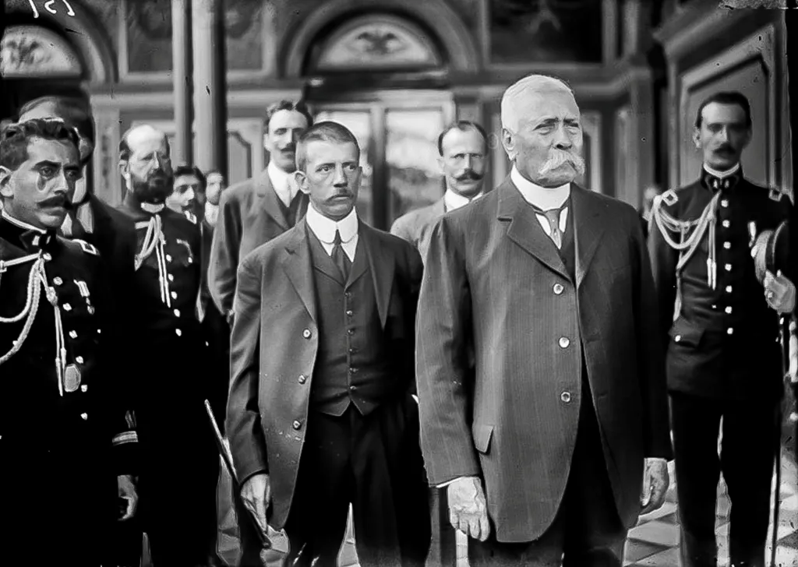
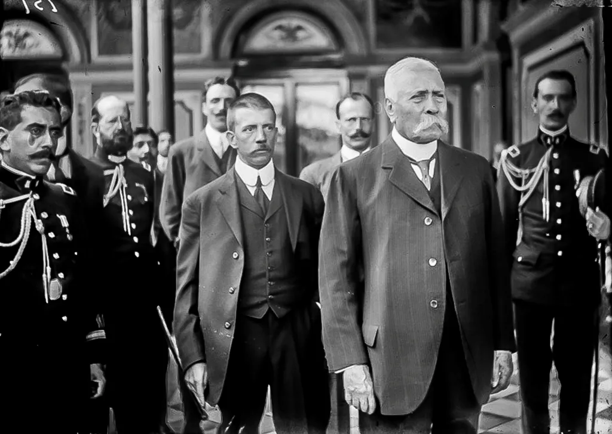
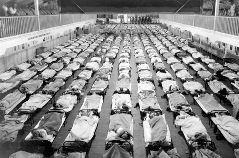
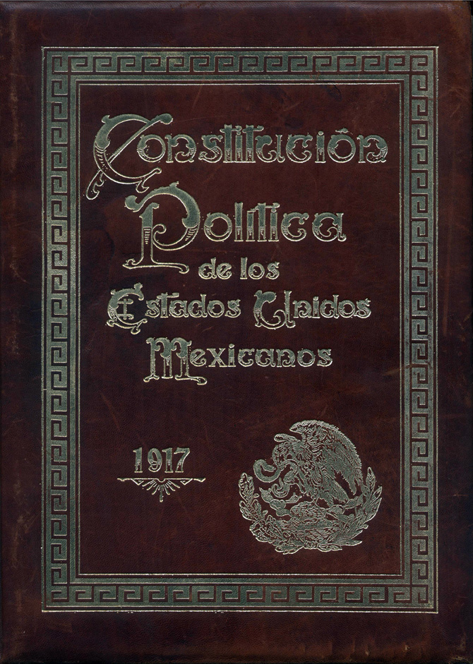
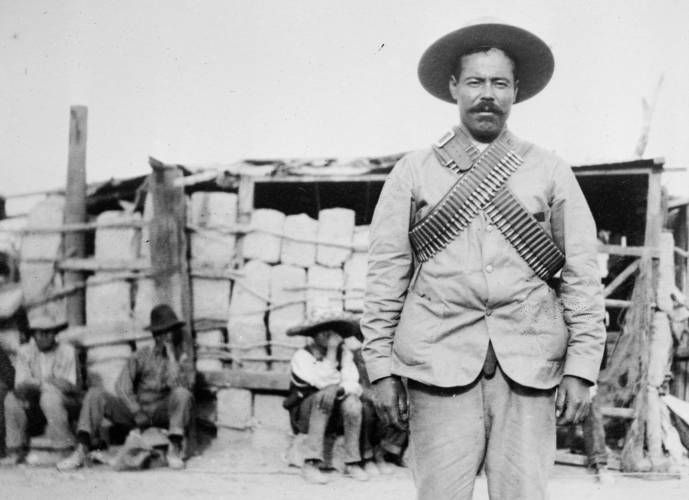
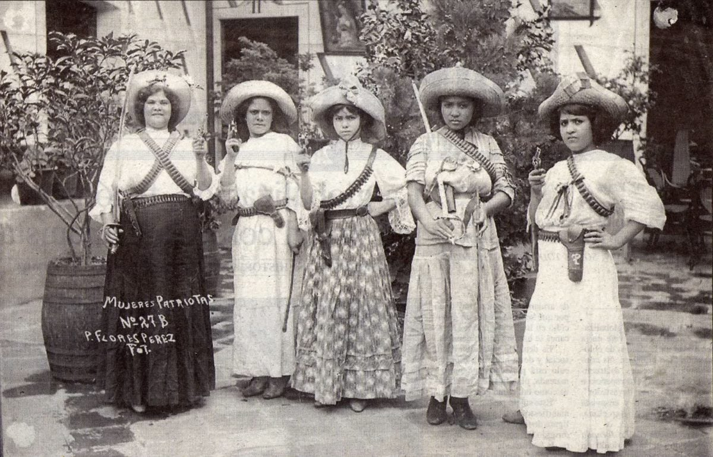
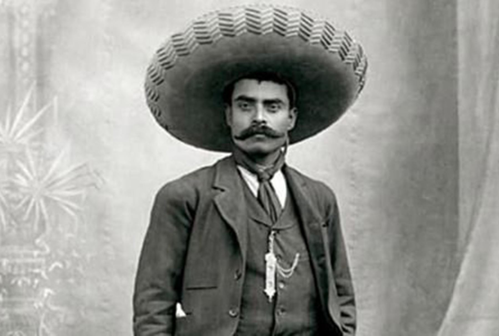

Renuncia de Porfirio Díaz.
Cinco días después de firmados los tratados, el 25 de mayo de 1911, Díaz renunció como estaba acordado, posteriormente se dirigió a Veracruz, desde donde se embarcó a su exilio en Francia.
Cinco días después de firmados los tratados, el 25 de mayo de 1911, Díaz renunció como estaba acordado, posteriormente se dirigió a Veracruz, desde donde se embarcó a su exilio en Francia.
la Revolución Mexicana dejó un saldo de un millón de muertos, pero estiman que 300 mil no murieron en este conflicto, sino de enfermedad. El México de ese entonces sufría de viruela, tifoidea, paludismo e influenza española.
La Constitución de 1917, todavía vigente casi 100 años después, consta de 137 artículos. Estos artículos definen lo que significa la ciudadanía, la organización de un gobierno, la reforma agraria, y enumeran una serie de derechos humanos básicos para todos los mexicanos.
Con respecto a la vestimenta que llegaron a utilizar los primeros revolucionarios del norte destaca el estilo vaquero o ranchero texano, un claro ejemplo fue Pascual Orozco, persona que gustaba de utilizar camisas de seda, pantalones de algodón resistente, botas vaqueras de media pantorrilla, corbata de punta cuadrado, carrilleras de balas a la cintura y sombreros texanos, sobre todo de la marca norteamericana Stetson(
“Adela dio nombre a las denominadas adelitas, mujeres soldaderas que, durante la Revolución, atendían a heridos, cargaban armas, se encargaban de los alimentos e incluso luchaban cuando el momento lo requería”, señala la Secretaría de Cultura.
al comenzar la guerra, en noviembre de 1910, el ferrocarril era el principal medio de transporte, comunicaba al centro del país con la frontera norte, con el Golfo de México y con el Pacífico

La figura de Emiliano Zapata ha sido la de defensor de los campesinos y se le ha expuesto como un hombre de escasos recursos, sin embargo, él no era pobre, se dedicaba al comercio de caballos, lo cual le dejaba buenas ganancias. Otro dato curioso sobre Zapata es que se cree que recurría a un doble para algunos eventos públicos, debido al asedio del Gobierno. De hecho, en su asesinato, la gente buscaba el lunar que se sabía tenía en la parte superior de su ojo con el fin de corroborar que realmente se trataba de su cadáver y no el del supuesto doble.
Nos ha gustado mucho compartirte esta información, aqui te dejamos un pequeño extra por si necesitas matar el tiempo mientras aprendes. 😎